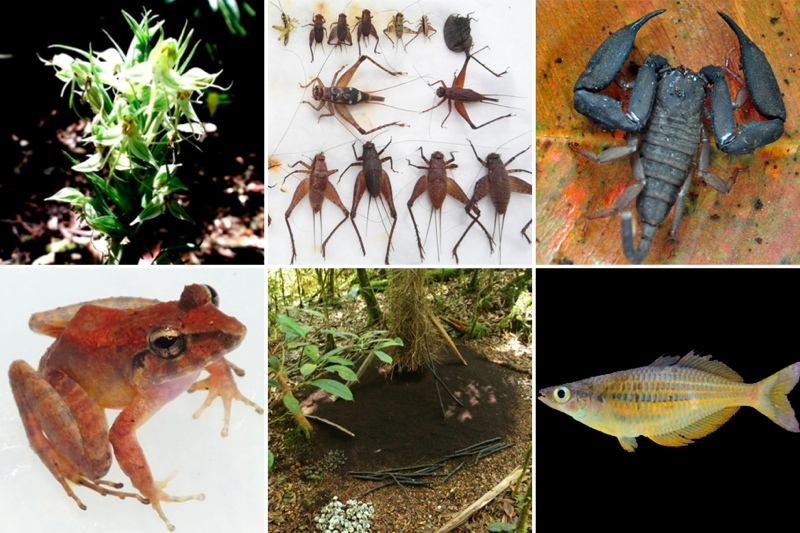
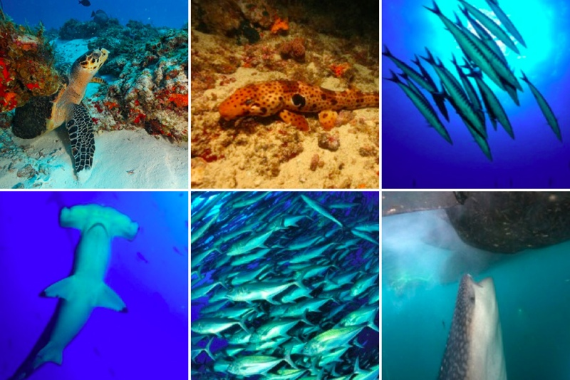

Papua Barat
Pertahanan Hijau dalam Kepungan Sawit dan Tambang
Oleh Fidelis Eka
Genosida atau pemusnahan etnis di Papua tak cuma terjadi lewat kekerasan. Melainkan juga melalui pembunuhan budaya dan cara hidup masyarakat setempat. Pernyataan keras tersebut dilontarkan oleh Yafet Leonard Franky, direktur Yayasan Pusaka — sebuah organisasi nirlaba yang fokus mengamati isu-isu terkait Papua.
Bukan tanpa alasan Angky, demikian sapaan akrabnya, menggambarkan situasi terkini Papua seperti itu. Pulau di ujung timur Indonesia tersebut kini menghadapi ‘kepungan’ pembangunan, mulai dari eksploitasi kayu, kekayaan sumber daya mineral, sampai menjadi incaran untuk pembukaan kebun kelapa sawit. “Perkebunan kelapa sawit paling banyak dibuka di Kabupaten Sorong dan Kabupaten Sorong Selatan, Papua Barat,” kata Angky dalam wawancara dengan Ekuatorial, beberapa waktu lalu.
Hingga akhir 2014, Yayasan Pusaka mencatat bahwa lebih dari 300 ribu hektare areal hutan Papua Barat dibabat untuk pembukaan lahan perkebunan dan areal tambang. Tidak hanya di darat, laut pun sudah dikapling untuk eksploitasi minyak dan gas.
Manajemen Hutan Papua Barat. Sumber: Pemerintah Provinsi Papua Barat untuk Governors’ Climate and Forests Task Force.
“Papua sudah dikepung,” kata Angky. “Di darat ada kelapa sawit dan HPH (Hak Pengusahaan Hutan). Di laut sudah ada migas di kawasan pesisir.” Lebih lanjut, Angky menandaskan bahwa hilangnya hutan Papua atau deforestasi justru disebabkan oleh kebijakan pemerintah.
“Deforestasi terjadi di Papua karena proyek-proyek pembangunan, kebijakan, dan pola pemanfaatan sumber daya alam yang tidak benar dan tidak ada pengawasan,” tegasnya.
Beberapa kebijakan pemerintah yang menurutnya berkontribusi terhadap kerusakan hutan Papua antara lain Masterplan Percepatan Pembangunan Ekonomi Indonesia (MP3EI), Merauke Integrated Food and Energy Estate (MIFEE), dan Rencana Tata Ruang Wilayah (RTRW).
Walau pemerintah memberlakukan penghentian pemberian izin baru pembukaan hutan atau lebih dikenal sebagai moratorium hutan, namun kebijakan-kebijakan ekonomi yang juga dikeluarkan oleh pemerintah pusat justru menghancurkan hutan alam di kawasan kepala burung Papua.
Angky mencontohkan Kabupaten Sorong, wilayah yang menurutnya dipaksakan menjadi salah satu objek pengusahaan hutan padahal tidak memungkinkan dari segi topografi. “Kabupaten Sorong tidak layak karena sebagian besar lereng gunung dengan kemiringan 45 derajat,” katanya. “Konsekuensinya, pohon-pohon yang ditebang jatuh dan menimpa tanaman lainnya. Habis sudah di bawahnya. Mereka tahu hutan bisa rusak, tetapi kepentingan ekonomi lebih besar.”
Bernadus Gilik, Kepala Kampung Malalilis, Distrik Klayili, Sorong, Papua Barat, berdiri di areal hutan yang baru saja digusur oleh perusahaan kelapa sawit April 2014. Foto: Yayasan Pusaka
Dampak Lingkungan dan Sosial Masyarakat
Semakin luas areal hutan yang dibuka untuk perkebunan dan pertambangan, masyarakat Papua sudah mulai merasakan dampaknya. Terutama dampak lingkungan dan relasi sosial.
Dulu masyarakat Papua hidup berlimpah karena tinggal di hutan yang masih sehat, dengan sumber mata air yang melimpah. Sejak ada perkebunan sawit, mereka harus mencari sumber air lebih jauh, karena industri sawit menyerap banyak air. “Mereka kan hidupnya dulu mudah, dekat dengan sumber-sumber alam yang ada. Tinggal berjalan kaki saja untuk mengambil air, karena dekat sungai. Bisa mandi dan ambil air dari situ. Tetapi sejak ada perkebunan, sumber air malah rusak,” jelas Angky.
Selain itu, perkebunan kelapa sawit juga semakin nyata menyingkirkan sumber pangan aslu mereka, yaitu sagu. “Sagu selalu dari air, tetapi sawit yang malah dominan (mengambil air),” katanya. Angky menambahkan, bahan-bahan kimia dari perkebunan akhirnya merusak dan mencemari sumber-sumber air tersebut.
Tidak cuma sagu. Masyarakat pun mulai kehilangan buah-buahan lokal seperti durian, cempedak, dan langsat. “Semua ditebang habis untuk membersihkan lahan. Bagaimana bisa bilang itu ketahanan pangan?” katanya. “Bahkan, di sana sudah biasa warung-warung menjual mie instan dan minuman botol. Sudah berubah jauh hidup mereka.”
Pada akhirnya, perubahan pola pangan tersebut diikuti dengan perubahan pola konsumsi dan budaya. Masyarakat Papua yang biasa hidup kolektif dan menetap di hutan berubah menjadi sangat individualistis karena muncul persaingan untuk mendapatkan uang. Banyak masyarakat yang semula bergantung kepada hutan akhirnya menyerah dan beralih menjadi petani sawit yang hanya bisa menerima gaji semata.
Angky menceritakan seorang bapak di Papua yang hanya digaji berdasarkan standar Upah Minimum Regional, yaitu sekitar Rp 2 juta. Sementara itu, kalau membuka ladang sendiri, beternak hewan sendiri, berburu sendiri, sudah cukup untuk memenuhi kebutuhan keluarga. “Uang Rp 2 juta sudahlah habis untuk membeli makanan semacam mie atau rokok, karena sudah bergeser pola konsumsi mereka. Sudah habis di situ, tidak ada uang untuk sekolah. Susah hidup mereka,” tandasnya.
Masyarakat menjadi semakin tergantung pada uang tunai dan melupakan jati dirinya sebagai pemburu. Tak hanya itu saja, kesibukan mencari nafkah sebagai petani sawit juga membuat masyarakat mulai kehilangan nilai-nilai kekerabatan, sosial, dan religi. “Karena mereka sudah dipisahkan dari hutan tempat mereka tinggal. Di mana-mana sudah sawit. Mereka seperti dibunuh pelan-pelan, jadi genosida itu bukan dari kekerasan tetapi melalui penghilangan budaya dan cara hidup.”
Lokasi perkebunan kelapa sawit di Distrik Salawati, Sorong, Juni 2014. Foto: Yayasan Pusaka
Perubahan Tata Ruang
Setelah hutan di Sumatera dan Kalimantan semakin menipis, aktivis hijau mulai melakukan pengawasan terhadap hutan Papua yang masih luas dan tergolong alami. Sayangnya, beberapa kebijakan yang dimaksudkan untuk melindungi kawasan tersebut masih belum memadai untuk menahan laju deforestasi.
Penerapan moratorium terhadap izin-izin pembukaan hutan alam dan kawasan gambut serta proyek pengurangan emisi dari deforestasi dan degradasi hutan (REDD+) belum mampu menghindarkan wilayah Papua dari ancaman deforestasi. Sebab, pemerintah juga mengeluarkan kebijakan lain yang justru memicu percepatan pembukaan hutan baik untuk perkebunan maupun tambang. Contohnya, MIFEE yang ditargetkan untuk bisa mengatasi kerawanan pangan dan energi dunia.
Berdasarkan Instruksi Presiden Nomor 5/2008, Kementrian Pertanian akhirnya meluncurkan program MIFEE pada 2010. Untuk MIFEE, pemerintah mengalokasikan 1,2 juta hektare lahan dengan pembagian 50 persen untuk lahan pertanian, 30 persen untuk perkebunan gula, dan 20 persen untuk lahan sawit. Pemerintah memproyeksikan program tersebut akan menghasilkan 1,95 juta ton beras, 2,02 juta ton jagung, 167 ribu ton kedelai, 64.000 ekor ternak sapi, 2,5 juta ton gula, dan 937 ribu ton CPO per tahun pada 2030.
Peta Rencana Investasi Areal Perkebunan pada Kawasan Hutan Kabupaten Merauke. Ada 11 dari 46 perusahaan yang sudah melakukan aktivitas di areal tersebut. Sumber: MIFEE
Selain itu, kebijakan percepatan ekonomi yang lebih dikenal dengan MP3EI juga memuat tugas bagi tiap-tiap provinsi untuk menghasilkan barang komoditas tambang, perkebunan, dan pertanian.
Melalui PP Nomor 32/2011, MP3EI diluncurkan oleh pemerintah pada tahun 2011 dan diproyeksikan untuk tahun 2025. Di satu sisi, pemerintah mengeluarkan kebijakan untuk melindungi hutan. Namun, di sisi lain mereka juga mengeluarkan kebijakan untuk pemanfaatan hutan dalam skala besar. Konflik kebijakan ini akhirnya dimanfaatkan untuk membuka hutan alam di Papua.
“Mereka gunakan semua lahan bekas HPH untuk dialihkan peruntukkannya, karena kawasan tersebut bukan termasuk kawasan yang terkena moratorium. Statusnya sebagai hutan sekunder atau sudah ada aktivitas sebelumnya, sehingga tidak masuk ke dalam kawasan moratorium yang diperuntukkan hanya untuk hutan alam. Itulah kelemahan moratorium,” jelas Angky.
Hutan-hutan seperti itu, lanjut dia, seharusnya bisa dipertahankan dan tidak harus dikonversikan untuk kepentingan lainnya, misalnya perkebunan kelapa sawit. Salah satu cara untuk bisa melegalkan perubahan fungsi lahan adalah melalui mekanisme rencana tata ruang wilayah atau RTRW.
“Dulu, izin-izin konsensi sudah mau habis. Tetapi melalui mekanisme RTRW, areal-areal tadi diubah kembali menjadi hutan produksi dan dilepaskan statusnya dari kawasan hutan,” katanya. Hal tersebut terlihat jelas pada perubahan RTRW untuk provinsi Papua Barat yang baru saja disahkan.
Yayasan Pusaka dan masyarakat setempat pun menolak adanya perubahan luasan kawasan hutan yang dianggap justru merusak dan memperluas deforestasi propinsi tersebut. Angky menduga bahwa perubahan tata ruang propinsi Papua Barat dilakukan untuk bisa mengakomodasi izin-izin yang sudah terlanjur dikeluarkan oleh pemerintah kabupaten dan provinsi terkait dengan pengembangan usaha perkebunan skala besar.
“Mereka sudah keluarkan ijin lokasi tapi izin pengalihan peruntukkan hutan belum ada. Sehingga, dibuatlah mekanisme RTRWP untuk akomodasi hal tersbeut. Dengan RTRWP bisa diputihkan,” katanya.
Lebih lanjut, Angky mengatakan, perubahan tersebut dilakukan untuk bisa mengakomodasikan proyek-proyek yang berhubungan dengan proyek MP3EI, terutama infrastruktur. Berdasarkan pembagian MP3EI, Papua yang digolongkan sebagai koridor 6, ditekankan kepada migas, tambang, infrastruktur, dan MIFEE.
“Sorong dan Teluk Bintuni diperuntukkan untuk migas, MP3EI, dan infrastruktur, misalnya untuk akses jalan dan pipa,” lanjutnya.
Sebagai rekomendasi, Ia pun meminta pemerintah untuk bisa mengakomodasikan hak-hak masyarakat sehingga nasib atas hutan mereka bisa diputuskan sendiri oleh mereka. “Sistem nilai masyarakat kan berbeda dengan pemerintah yang di kepalanya hanya dapat untung saja. Masyarakat punya nilai yang banyak, bukan manfaat ekonomi tapi nilai sosial budaya, ekologi sehingga pertimbangan-pertimbangan masyarakat mungkin jauh lebih bijaksana untuk bagaimana mengelola hutan secara berkelanjutan dan lestari,” katanya.
Ia pun mengingatkan bahwa kondisi Papua harus dibedakan dengan daerah lainnya di Indonesia karena otonomi khusus yang dijalankan oleh pemerintah sendiri.
Pemetaan Partisipatif Wujud Pengakuan Hak Adat
Meskipun secara de jure Mahkamah Konstitusi telah mengabulkan gugatan masyarakat sipil atas UU 41/1999 tentang Kehutanan pada 2012, sehingga lahir pengakuan yang populer dikenal dengan nama MK 35 yang menegaskan hutan masyarakat bukan hutan negara, namun dalam prosesnya masyarakat adat Papua tidak serta-merta dapat mengklaim wilayah mereka.
Ganjalannya, untuk memperoleh pengesahan dan pengakuan, masyarakat adat perlu terlebih dahulu memetakan kawasan adat mereka.
“Saya dulu berpikir, masak harus diakui secara formal? Kita kan jelas-jelas ada. Tetapi, ternyata negara tidak seperti yang kita pikirkan. Negara seperti mesin. Masyarakat yang pakai hati, pakai mata, dan telinga tidak bisa begitu saja menghadapi negara yang seperti mesin,” Sekretaris Jenderal Aliansi Masyarakat Adat Nusantara (AMAN) Abdon Nababan mengkritisi situasi tersebut.
Hingga kini, AMAN telah memetakan sekitar 4,89 juta hektare wilayah adat dari total 10 juta hektare yang ditargetkan. Sayangnya, wilayah tersebut belum juga bisa dikukuhkan sebagai wilayah hukum adat, sebab tidak ada wali data resmi untuk diajukan ke pemerintah.
Semula, Abdon menjelaskan, wali data bagi peta-peta tersebut ialah Badan Pengelola REDD (Reducing Emissions from Deforestation and Forest Degradation). Akan tetapi, badan tersebut telah dibubarkan pemerintah dan dilebur ke dalam Kementrian Lingkungan Hidup dan Kehutanan.
Abdon menambahkan, semakin cepat pemetaan kawasan adat memperoleh pengukuhan maka akan semakin baik untuk mencegah konflik yang tengah berkembang saat ini. Hal yang sama diutarakan Direktur Yayasan Pusaka, Yafet Leonard Franky. Ia menandaskan bahwa pengukuhan kawasan hutan merupakan akar konflik, karena saat ini tidak jelas kawasan mana yang dikuasai oleh negara dan mana yang dikuasai oleh masyarakat. “Pemetaan partisipatif berguna untuk mengakui masyarakat setempat mempunyai hak terhadap tanah tersebut. Setelah itu, bagaimana bisa diterima oleh pemerintah,” jelas Angky.
Adapun, implementasi di Papua belum terlihat. Terutama dalam hal alokasi anggaran, hampir tidak ada dana untuk pemetaan ataupun musyarawah guna menelusuri sejarah penguasaan tanah. Menurut Angky, saat ini alokasi anggaran lebih banyak untuk agenda pembangunan. Bukan untuk memulihkan hak-hak masyarakat setempat.
Dia pun menegaskan bahwa wilayah otonomi khusus seperti Papua sesungguhnya tidak perlu melakukan pemetaan. Yang diperlukan justru pengukuhan sebagai kawasan hutan adat, karena tidak ada hutan negara di daerah tersebut.
Pada kenyataannya, pemerintah malah mengeluarkan kebijakan sepihak yang mengklaim bahwa lahan tersebut milik negara. Sementara itu, masyarakat baru paham istilah hak penguasaan hutan dan UU Kehutanan pada dekade 1990. “Akhirnya, mereka susah membuktikan kepemilikan lahan adat mereka. Sementara itu, pemerintah langsung memberikan izin kepada perusahaan. Tiba-tiba tanah mereka diklaim. Itu sama saja menduduki hutan di sana,” ujar Angky.
Menurut dia, selama ini pengakuan terhadap masyarakat hanya secara de facto. Yakni di awal, saat pemberitahuan bahwa perusahaan akan beroperasi. Lebih lanjut, ia mengatakan bahwa pemerintah harus bisa menyelesaikan konflik yang ada karena kehidupan masyarakat Papua sangat tergantung dengan hutan.
Dalam pidatonya di acara Hari Kebangkitan Masyarakat Adat Nusantara (KMAN) 2015 dan 16 Tahun AMAN, Sorong, Papua, Abdon mengatakan bahwa perjuangan masyarakat adat untuk mempertahankan tanah mereka masih panjang.
“Kita terus berharap bahwa dengan pemerintah baru yang lebih bersahabat, masyarakat adat bisa mencapai kemajuan yang lebih baik lagi,” papar Abdon. Lebih lanjut, ia menyerukan adanya proses rekonsiliasi nasional antara masyarakat adat dan pemerintah melalui pembentukan satuan tugas yang berada langsung di bawah presiden.
Ekspedisi Lengguru Ungkap Kekayaan Papua Barat
Alam Papua yang masih alami dan belum tersentuh aktivitas manusia mengundang banyak peneliti untuk menyingkap kekayaan hayati pulau tersebut. Walaupun sempat mengalami kendala pendanaan, tim peneliti gabungan dari Eropa dan Indonesia, dimotori Lembaga Ilmu dan Pengetahuan Indonesia, Akademisi Perikanan Sorong (APSOR), dan Institut de Recherche pour le Dévelopement (IRD) menjelajah daerah kepala burung Papua.
Ekspedisi Lengguru 2014 yang melibatkan lebih dari 70 peneliti tersebut terlaksana pada 17 Oktober sampai 20 November. Hasilnya, para peneliti berhasil mengumpulkan data Buruway (Nusa Ulan), Arguni Atas (Wanoma, Urisa), dan Teluk Triton (Lobo, Kamaka) di Kabupaten Kaimana, Papua Barat.
Salah satu peneliti asal Indonesia, Gono Semiadi, mengatakan Kaimana dipilih karena kawasannya masih bebas dari ancaman deforestasi. Utamanya, sawit. "Saya bicara per segmen, di bawah pembinaan sekarang aman. Pemda sekarang aman. Log-log memang ada tetapi konteksnya kan kecil-kecil. Berbeda dengan yang tebang habis. Kita masuk ke log-log tapi yang ditakutkan kalau pembukaan sawit. Kalau kelapa sawit kan clean, itu belum ada. Log-log bisa karena masyarakat adat yang mengizinkan,” jelasnya.
Penelitian pertama dilakukan pada 1980-an oleh Jared Diamond, peneliti asal Amerika Serikat. Dia berhasil mencapai ketinggian sekitar 1.400 meter di atas permukaan laut atau 200 meter di bawah titik tertinggi Gunung Kumawa. Adapun, Laurent Pouyaud, peneliti dari IRD, menyayangkan bahwa belum ada penelitian mendalam terkait keanekaragaman hayati di Lengguru sejak saat itu.
Menurut Laurent, Ekspedisi Lengguru 2014 berhasil mengumpulkan data awal tentang keanekaragaman hayati di daerah karst Papua Barat. Dia menambahkan, karakter karst di kawasan tersebut menghadirkan keanekaragaman hayati yang berbeda dari daerah lain di Indonesia.
Hal tersebut diamini peneliti kelautan Ucu Yanu Arbi. Dia mengatakan, mereka menemukan jenis karang yang tidak umum di Indonesia justru melimpah di perairan tersebut. “Contohnya jenis gorgians yang umum dijumpai di tempat lain di Indonesia, di sana malah sedikit. Sebaliknya, jenis yang jarang malah relatif mudah dijumpai di sana,” jelas Ucu. Ia menduga karakter karst di daratan mempengaruhi perkembangan satwa di daerah laut.
Lebih lanjut, ia menjelaskan bahwa terumbu karang tidak berkembang baik di perairan dekat daratan sementara di pulau kecil justru berkembang lebih baik. “Kita mendata ada 141 spesies, 53 genus dan 16 famili dari 13 stasiun untuk terumbu karang,” paparnya. “Untuk hewan moluska, seperti cumi-cumi ditemukan sangat melimpah tapi kima justru jarang, kurang dari 10 individu. Yang umum di Indonesia malah jarang ditemukan di sini.”
Untuk ikan besar, Ucu mengatakan, mereka banyak menemui hiu. Utamanya hiu paus, hiu tokek (kalabia), hiu-karpet (wobegong), hiu-martil (hammer head). “Kita juga menjumpai lumba-lumba, sampai ada 300 individu dalam satu grup. Ini merupakan rekor baru dari Papua,” jelasnya. Ia mengaku sempat menjumpai dugong dan paus, namun sayangnya tidak berhasil didokumentasikan dengan baik.
Lebih lanjut, ia memaparkan bahwa kondisi terumbu karang di Papua masih tergolong bagus. Namun, bukan tanpa ancaman, terutama dari perubahan iklim dan pemboman. “Ada daerah yang terlihat bekas pemboman tapi gelombang besar juga mengancam,” katanya.
Selain keanekaragaman hayati laut, para peneliti juga berhasil menemukan beberapa spesies darat yang masih belum teridentifikasi, antara lain tujuh kandidat spesies burung yang baru, 600-an koleksi tumbuhan meliputi palem, anggrek, jambu-jambuan, ficus, talas-talasan, dan tanaman hias lainnya. Ditambah lagi, 20 spesies kelelawar, delapan spesies tikus, dan lima spesies mamalia yang belum teridentifikasi.
-
 Keanekaragaman hayati Papua. Sumber: Dokumentasi LIPI.
-
 Keanekaragaman hayati bawah laut Papua. Sumber: Dokumentasi LIPI.
Gono menambahkan bahwa tim peneliti pun sudah mengajukan rekomendasi terkait dengan potensi kawasan Kaimana, khususnya penetapan zonasi daerah laut dan pembangkit listrik tenaga sungai.
“Sudah ada wilayah tertutup yang meskipun begitu indah lebih baik untuk penelitian karena terlalu sensitif untuk tingkat kerusakan. Itu di Pulau Nusa Ulan,” kata Gono. “Ada yang 80 persen menyerupai Nusa Ulan, yaitu Pulau Agi yang menyerupai [bisa sebagai daerah ekowisata].”
Ia menambahkan bahwa dari semua wilayah kerja tim peneliti, baru Gunung Kumawa yang merupakan daerah dilindungi, yaitu cagar alam. Sementara itu, kawasan perairan masih belum dikenakan sistem zonasi.
Untuk pembangkit listrik tenaga air, Gono mengatakan perlu adanya penelitian lebih lanjut dan mendalam. Meski demikian, ia menggambarkan bahwa karakteristik sungai yang ada di daerah tersebut
“Tidak lagi bangun konstruksi bangunan. Kalau lihat gambar, seperti punya kipas angin, cemplungin ke air, tinggal ada turbin dan sambungkan ke kabel. Jadi tidak perlu konstruksi beton, sangat minimal,” jelasnya. “Ini yang dicoba dilihat karena teknologi baru, ini inovatif karena setiap ada pembangunan listrik ada penutupan akses masyarakat.”
Meski bukan domain mereka, Gono mengatakan bahwa mereka berupaya memberikan kontribusi kepada mereka, seperti mencari air bersih. “Kami di Biologi jadi kami melihat itu hanya tambahan, jadi bisa saling menguntungkan antara terjaganya kehidupan liar dan masyarakat dapat apa,” katanya menambahkan bahwa mereka mencari partner penelitian untuk teknologi tepat guna air bersih.